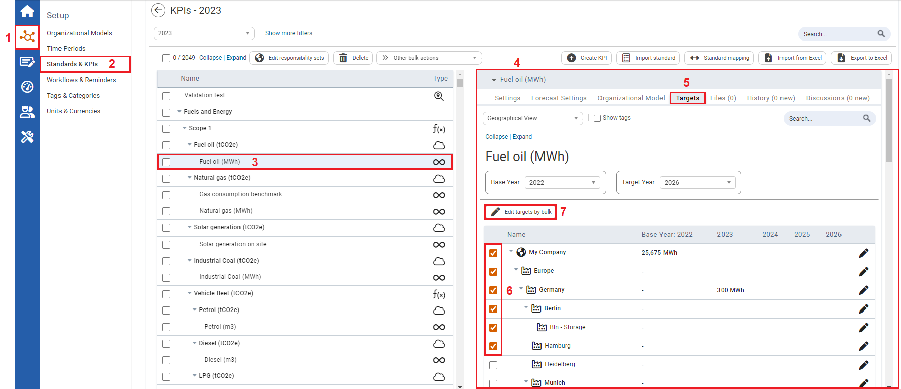

Target can be edited in bulk. This is convenient when the edits being made are the same over numerous organizational units.
The Targets that can be edited by bulk are numeric or formula KPIs.

| 1 | On the left navigation panel, click Setup. |
| 2 | Click Standards & KPIs. |
| 3 | Select either a numeric or formula KPI. |
| 4 | Information on the KPI will display to the right. |
| 5 | Click the Targets tab. A list of organizational units for that KPI will appear. |
| 6 | Select multiple organizational units, by clicking the checkbox in front of the organizational units listed. |
| 7 | Click Edit targets by bulk. Edit Targets for (year of interest will display here) window opens. |
To edit targets using the Edit Targets window view Setting Targets.